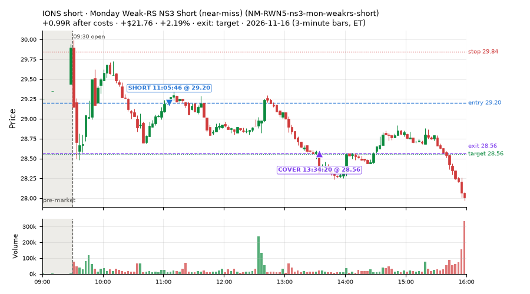
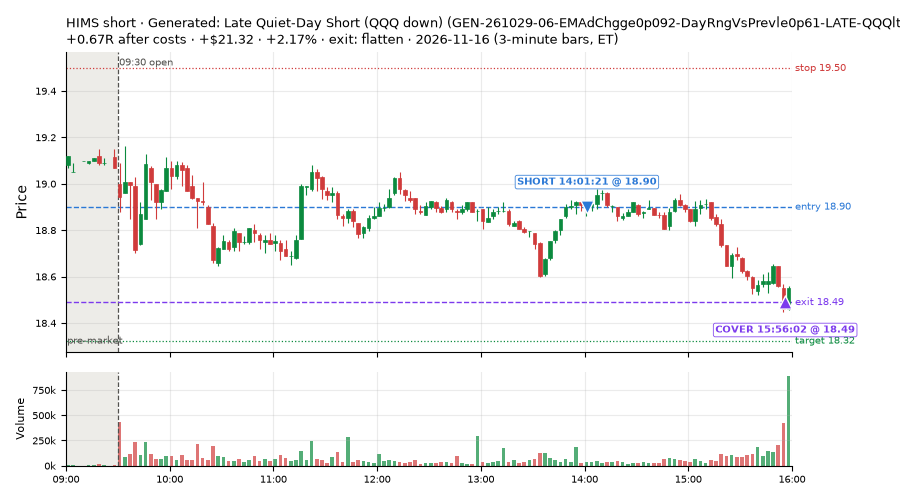
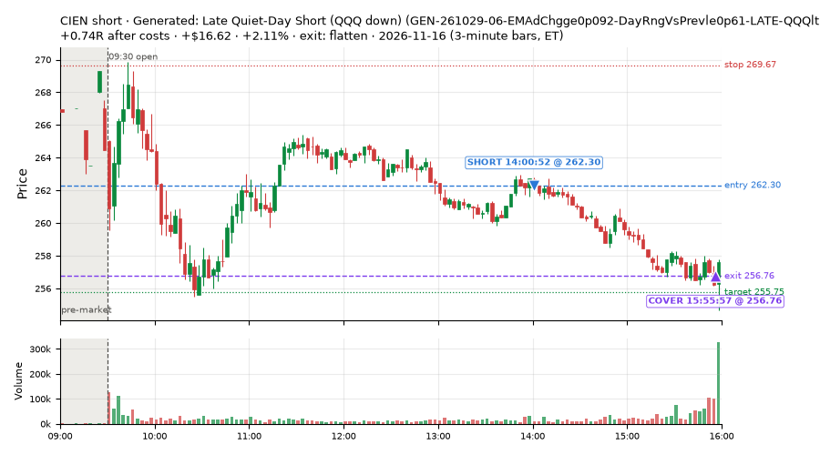
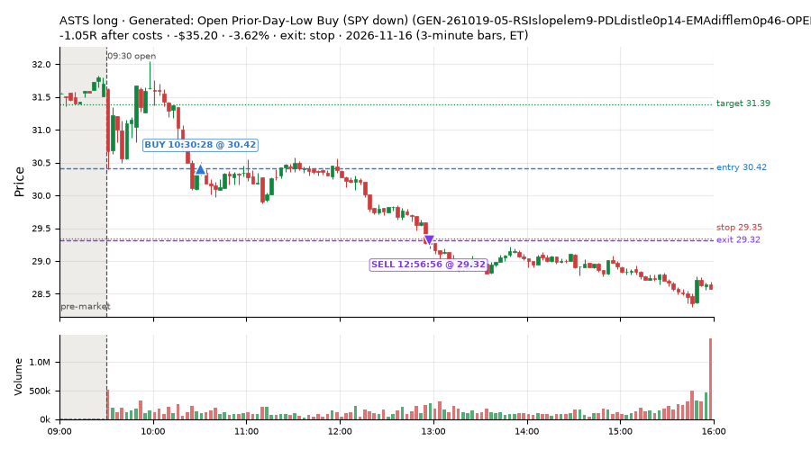
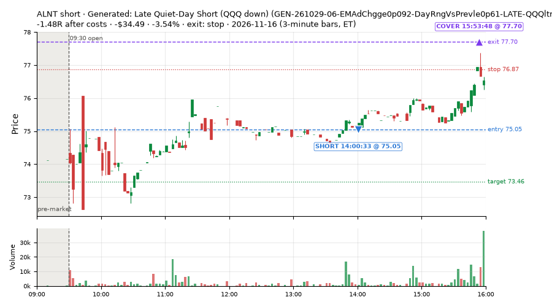
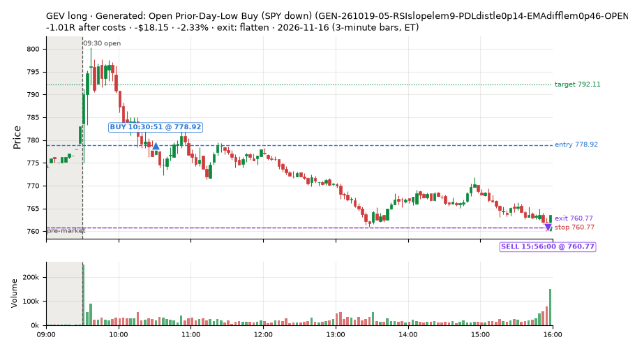
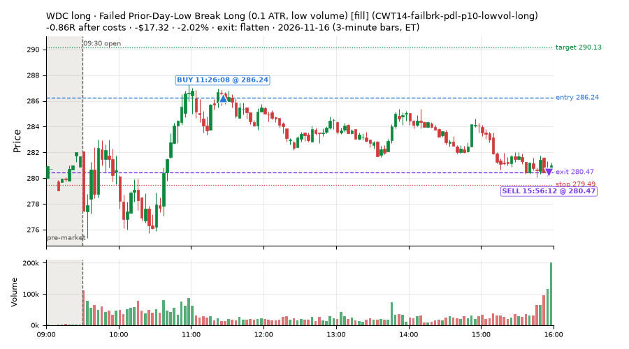
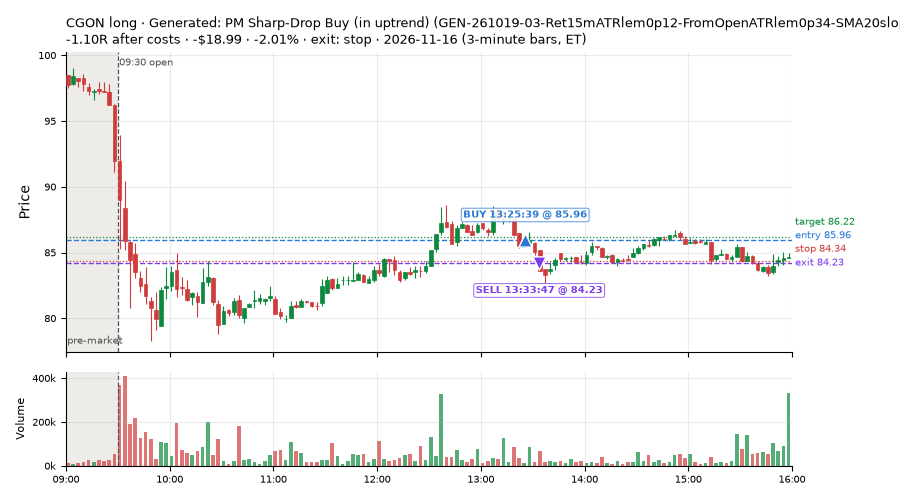

100 trades · win rate 64% · P/L $104.00
PROBATION: no live setup has passed both locked test periods. 10 owner-directed setups added 2026-10-08 (MarcoFlow top 5 + 5 new), untested live. RW6G1 (RW6 + VWAP band guard) added 2026-10-09, probation.

| Symbol | Setup | Side | In | Out | Entry | Exit | Exit reason | % gained | P/L |
|---|---|---|---|---|---|---|---|---|---|
| IONS | Monday Weak-RS NS3 Short (near-miss) (NM-RWN5-ns3-mon-weakrs-short) | short | 11:05 | 13:34 | 29.20 | 28.56 | target | +2.19% | $21.76 |
| HIMS | Generated: Late Quiet-Day Short (QQQ down) (GEN-261029-06-EMAdChgge0p092-DayRngVsPrevle0p61-LATE-QQQltm0p3-t1s1-short) | short | 14:01 | 15:56 | 18.90 | 18.49 | flatten | +2.17% | $21.32 |
| CIEN | Generated: Late Quiet-Day Short (QQQ down) (GEN-261029-06-EMAdChgge0p092-DayRngVsPrevle0p61-LATE-QQQltm0p3-t1s1-short) | short | 14:00 | 15:55 | 262.30 | 256.76 | flatten | +2.11% | $16.62 |
| Symbol | Setup | Side | In | Out | Entry | Exit | Exit reason | % lost | P/L |
|---|---|---|---|---|---|---|---|---|---|
| ASTS | GEN-261019-05-RSIslopelem9-PDLdistle0p14-EMAdifflem0p46-OPEN-SPYltm0p5-t1s1-long | long | 10:30 | 12:56 | 30.42 | 29.32 | stop | -3.62% | $-35.20 |
| ALNT | GEN-261029-06-EMAdChgge0p092-DayRngVsPrevle0p61-LATE-QQQltm0p3-t1s1-short | short | 14:00 | 15:53 | 75.05 | 77.70 | stop | -3.54% | $-34.49 |
| GEV | GEN-261019-05-RSIslopelem9-PDLdistle0p14-EMAdifflem0p46-OPEN-SPYltm0p5-t1s1-long | long | 10:30 | 15:56 | 778.92 | 760.77 | flatten | -2.33% | $-18.15 |
| WDC | CWT14-failbrk-pdl-p10-lowvol-long | long | 11:26 | 15:56 | 286.24 | 280.47 | flatten | -2.02% | $-17.32 |
| CGON | GEN-261019-03-Ret15mATRlem0p12-FromOpenATRlem0p34-SMA20slopege0p29-PM-BRoplt0p5-t05s1-long | long | 13:25 | 13:33 | 85.96 | 84.23 | stop | -2.01% | $-18.99 |








Signal to fill: median 2s, 90th percentile 4s (100 trades). Bars close each minute; the order follows the bar close.
Best excursion (MFE): median 0.37R; worst (MAE) median 0.34R. 34% of trades never got +0.25R in our favour; 0 reached +1R and still closed at or below 0.
| Symbol | Setup | Best R | Worst R | Closed R |
|---|---|---|---|---|
| ISRG | CWT14-failbrk-pdl-p10-lowvol-long | +0.65 | -1.07 | -1.17 |
| ALNT | GEN-261029-06-EMAdChgge0p092-DayRngVsPrevle0p61-LATE-QQQltm0p3-t1s1-short | -0.01 | -1.05 | -1.48 |
| CGON | GEN-261019-03-Ret15mATRlem0p12-FromOpenATRlem0p34-SMA20slopege0p29-PM-BRoplt0p5-t05s1-long | +0.36 | -1.08 | -1.10 |
| SW | CWT14-failbrk-pdl-p10-lowvol-long | +0.29 | -1.05 | -1.10 |
| XRT | CWT14-failbrk-pdl-p10-lowvol-long | +0.22 | -1.00 | -1.11 |
| Entry time | Trades | Win | Avg R | P/L |
|---|---|---|---|---|
| 09:50-10:30 | 16 | 69% | +0.21 | $34.84 |
| 10:30-11:30 | 16 | 44% | -0.33 | $-73.46 |
| 11:30-13:00 | 4 | 25% | -0.77 | $-20.56 |
| 13:00-14:00 | 5 | 40% | -0.27 | $-14.80 |
| 14:00-16:00 | 59 | 73% | +0.12 | $177.98 |
| Setup | Trades | Win | Avg R after costs | Adj R (net of SPY) | Avg R ex-market (all sessions) | P/L |
|---|---|---|---|---|---|---|
| Failed Prior-Day-Low Break Long (0.1 ATR, low volume) [fill] (CWT14-failbrk-pdl-p10-lowvol-long) | 29.0 | 48% | -0.26 | -0.01 | +0.01 (beta +0.81, n 100) | $-69.37 |
| Generated: PM Sharp-Drop Buy (in uptrend) (GEN-261019-03-Ret15mATRlem0p12-FromOpenATRlem0p34-SMA20slopege0p29-PM-BRoplt0p5-t05s1-long) | 2.0 | 50% | -0.20 | -0.06 | -0.17 (beta -0.04, n 5) | $-8.19 |
| Generated: Open Prior-Day-Low Buy (SPY down) (GEN-261019-05-RSIslopelem9-PDLdistle0p14-EMAdifflem0p46-OPEN-SPYltm0p5-t1s1-long) | 11.0 | 45% | -0.04 | +0.02 | +0.26 (beta +1.43, n 11) | $-25.78 |
| Generated: PM Runner Fade (SPY down) (GEN-261019-09-EMAdChgge0p15-Since950ATRge0p6-PM-SPYltm0p5-t05s1-short) | 2.0 | 100% | +0.26 | +0.18 | – | $8.96 |
| Generated: Late Volume-Spike Low Buy (GEN-261026-02-VolRatioge2-SMA20dlem0p58-BarsSinceLODle1-LATE-BRoplt0p35-t1s1-long) | 4.0 | 25% | -0.56 | -0.53 | – | $-25.90 |
| Generated: Midday Oversold Short (quiet day) (GEN-261028-06-RSI5le13-VWAPatrlem0p15-DayRngVsPrevle0p34-MID-BRoplt0p35-hold-short) | 1.0 | 100% | +0.31 | -0.40 | – | $2.25 |
| Generated: Late Quiet-Day Short (QQQ down) (GEN-261029-06-EMAdChgge0p092-DayRngVsPrevle0p61-LATE-QQQltm0p3-t1s1-short) | 50.0 | 78% | +0.19 | +0.05 | +0.11 (beta -0.30, n 50) | $200.27 |
| Monday Weak-RS NS3 Short (near-miss) (NM-RWN5-ns3-mon-weakrs-short) | 1.0 | 100% | +0.99 | +0.58 | – | $21.76 |
Market direction (SPY, beta 1) accounted for $30.52 of today's $104.00; the rest ($73.48) came from the setups themselves. Avg R net of SPY: +0.01 (incl. a hedge leg's cost; report only).
21 setups live today. Today: 287 signals, 100 taken, 1 lost because another setup held the symbol (0%). Since 2026-11-12 (3 sessions): 470 signals, 188 taken, 1 lost to other setups (0%). Peak open positions today 69 of 200 slots. Earnings blackout removed 411 symbols before scanning.
Simulated playing time (not live): 282 what-if trades of signals not taken, avg +0.08R, 68% winners; of them 1 lost to another setup (avg +0.21R).
Silent: CWT04-backside-vwaptest-a25-short, IDX2-spy075-0945-3x-trail, LD4-st4-breadthup-t1s05-long, GEN-261026-03-NewLOD-Flow3lem0p37-FromOpenATRlem0p78-LUNCH-BRopgt0p5-holdtr-short
| Prio | Setup | Today sig / taken | Sessions | Signals / taken / trades | Taken/day | Expected/day | Lost to other setups | Lost to (setup n) | Top skip reasons | SIMULATED: not-taken n / avg R / win | Verdict |
|---|---|---|---|---|---|---|---|---|---|---|---|
| 1 | Backside VWAP-Test Short (big runner) CWT04-backside-vwaptest-a25-short | 0 / 0 | 3 | 0 / 0 / 0 | 0.00 | – | 0 | – | – | 0 / – | silent no signals in 3 session(s); no expected rate on file |
| 2 | Generated: Late-AM VWAP Pop Short (SPY up) GEN-261023-01-VWAPxUp-VWAPatrge0p33-LAM-SPYgt0p5-t05s05-short | 0 / 0 | 1 | 0 / 0 / 0 | 0.00 | – | 0 | – | – | 0 / – | quiet - wait no signals in 1 session(s); too early to tell |
| 3 | Generated: PM Runner Fade (SPY down) GEN-261019-09-EMAdChgge0p15-Since950ATRge0p6-PM-SPYltm0p5-t05s1-short | 10 / 2 | 1 | 10 / 2 / 2 | 2.00 | – | 0 | – | not shortable / shorts off 7, spread / quote / size 1 | 8 / +0.27R / 88% | slow 10.0 entries/week; ~6 weeks to 60 trades |
| 4 | Generated: Open RSI Pop Reversal Short GEN-261029-10-RSIslopege19-Ret5mlem0p21-EMAdiffge0p29-OPEN-BRvwgt0p5-t1s1-short | 0 / 0 | 1 | 0 / 0 / 0 | 0.00 | – | 0 | – | – | 0 / – | quiet - wait no signals in 1 session(s); too early to tell |
| 5 | Generated: Lunch VWAP Reclaim Buy GEN-261028-03-EMAdChgge0p15-VWAPxUp-Since950ATRlem0p43-LUNCH-SPYgt0p25-hold-long | 0 / 0 | 1 | 0 / 0 / 0 | 0.00 | – | 0 | – | – | 0 / – | quiet - wait no signals in 1 session(s); too early to tell |
| 6 | Generated: Midday Oversold Short (quiet day) GEN-261028-06-RSI5le13-VWAPatrlem0p15-DayRngVsPrevle0p34-MID-BRoplt0p35-hold-short | 1 / 1 | 1 | 1 / 1 / 1 | 1.00 | – | 0 | – | – | 0 / – | slow 5.0 entries/week; ~12 weeks to 60 trades |
| 7 | Generated: Late Volume-Spike Low Buy GEN-261026-02-VolRatioge2-SMA20dlem0p58-BarsSinceLODle1-LATE-BRoplt0p35-t1s1-long | 5 / 4 | 1 | 5 / 4 / 4 | 4.00 | – | 0 | – | spread / quote / size 1 | 1 / -0.83R / 0% | ok 20.0 entries/week |
| 8 | Index Dip Bounce 2 3x S&P IDX2-spy075-0945-3x-trail | 0 / 0 | 3 | 0 / 0 / 0 | 0.00 | – | 0 | – | – | 0 / – | silent no signals in 3 session(s); no expected rate on file |
| 9 | * Oversold EMA Cross-Down with Breadth Turning Up (near-miss) LD4-st4-breadthup-t1s05-long | 0 / 0 | 3 | 0 / 0 / 0 | 0.00 | – | 0 | – | – | 0 / – | silent no signals in 3 session(s); no expected rate on file |
| 10 | Afternoon Exhaustion Short, Gap-Down, SPY Up (near-miss) NM-RWR1-exh150-gapdn-spyup-pm-short | 0 / 0 | 3 | 2 / 1 / 1 | 0.33 | – | 0 | – | other 1 | 1 / +0.38R / 100% | slow 1.7 entries/week; ~36 weeks to 60 trades |
| 11 | Monday Weak-RS NS3 Short (near-miss) NM-RWN5-ns3-mon-weakrs-short | 1 / 1 | 3 | 1 / 1 / 1 | 0.33 | – | 0 | – | – | 0 / – | slow 1.7 entries/week; ~36 weeks to 60 trades |
| 12 | Generated: Open Prior-Day-Low Buy (SPY down) GEN-261019-05-RSIslopelem9-PDLdistle0p14-EMAdifflem0p46-OPEN-SPYltm0p5-t1s1-long | 19 / 11 | 1 | 19 / 11 / 11 | 11.00 | – | 0 | – | spread / quote / size 6, other 2 | 8 / -0.78R / 12% | ok 55.0 entries/week |
| 13 | Panic Flush Reversal (deep, 5x volume) CWT05-flush-m075-v5-long | 0 / 0 | 3 | 2 / 1 / 1 | 0.33 | – | 0 | – | broker rejected 1 | 1 / +0.59R / 100% | slow 1.7 entries/week; ~36 weeks to 60 trades |
| 14 | Generated: PM Gap-Up New-Low Buy (SPY up) GEN-261027-02-NewLOD-RSI14le35-Gapge2-PM-SPYup-holdtr-long | 0 / 0 | 1 | 0 / 0 / 0 | 0.00 | – | 0 | – | – | 0 / – | quiet - wait no signals in 1 session(s); too early to tell |
| 15 | Generated: Lunch New-Low Short (selling) GEN-261026-03-NewLOD-Flow3lem0p37-FromOpenATRlem0p78-LUNCH-BRopgt0p5-holdtr-short | 0 / 0 | 3 | 0 / 0 / 0 | 0.00 | – | 0 | – | – | 0 / – | silent no signals in 3 session(s); no expected rate on file |
| 16 | Generated: Late-AM New-Low Buy (SPY up) GEN-261027-03-NewLOD-DayPosle0p19-SMA20dlem0p59-LAM-SPYgt0p5-hold-long | 0 / 0 | 1 | 0 / 0 / 0 | 0.00 | – | 0 | – | – | 0 / – | quiet - wait no signals in 1 session(s); too early to tell |
| 17 | Generated: Late Quiet-Day Short (QQQ down) GEN-261029-06-EMAdChgge0p092-DayRngVsPrevle0p61-LATE-QQQltm0p3-t1s1-short | 199 / 50 | 1 | 199 / 50 / 50 | 50.00 | – | 1 | CWT14-failbrk-pdl-p10-lowvol-long 1 | per-setup cap 100, not shortable / shorts off 34, other 8 | 149 / +0.17R / 70% | ok 250.0 entries/week |
| 18 | Generated: PM Sharp-Drop Buy (in uptrend) GEN-261019-03-Ret15mATRlem0p12-FromOpenATRlem0p34-SMA20slopege0p29-PM-BRoplt0p5-t05s1-long | 3 / 2 | 3 | 10 / 5 / 5 | 1.67 | – | 0 | – | spread / quote / size 3, other 2 | 5 / +0.41R / 100% | slow 8.3 entries/week; ~7 weeks to 60 trades |
| 19 | Generated: Morning Breakdown Short (volatile) GEN-261022-07-Z12lem1p9-FlowShiftlem0p96-ATRdge3p6-AM-BRopgt0p5-t1s1-short | 0 / 0 | 1 | 0 / 0 / 0 | 0.00 | – | 0 | – | – | 0 / – | quiet - wait no signals in 1 session(s); too early to tell |
| 20 | Afternoon VWAP Reclaim Fade NS4-pm-vwap-reclaim-oversold-short | 1 / 0 | 3 | 22 / 12 / 12 | 4.00 | 3.05 | 0 | – | spread / quote / size 4, not shortable / shorts off 3, other 3 | 10 / +0.05R / 50% | ok 20.0 entries/week |
| 21 | Failed Prior-Day-Low Break Long (0.1 ATR, low volume) [fill] CWT14-failbrk-pdl-p10-lowvol-long | 48 / 29 | 3 | 199 / 100 / 100 | 33.33 | – | 0 | – | spread / quote / size 63, other 36 | 99 / -0.02R / 67% | ok 166.7 entries/week |
Every trade is attached as a CSV you can open and edit in Excel or Google Sheets. Live page: https://misiti15.github.io/MCF/live/